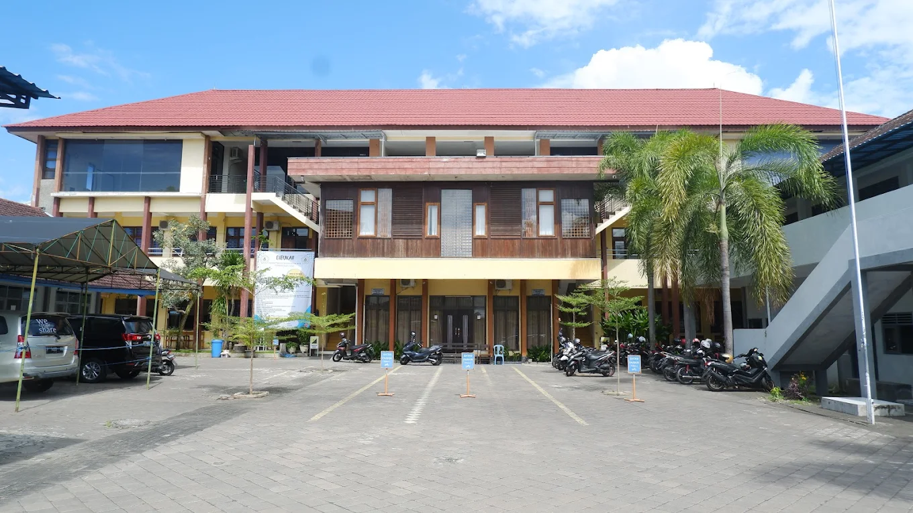

Contoh Penggunaan Hyperlink (<a>)
Kunjungi Google untuk mencari informasi.
Ingin kembali ke atas? Klik di sini.
Belajar Desain Web itu menyenangkan!
1. Formating Task
Ini adalah sebuah paragraf teks yang menggunakan tag p. Di bawah ini adalah garis horizontal (hr):
Baris pertama teks.
Ini baris kedua setelah menggunakan tag br (line break).
Gunakan perintah print() untuk mencetak teks.
Tekan Ctrl+C untuk menyalin.
Variabel dalam matematika: x = 10.
Output sistem: Error 404 Not Found
Teks Pre-formatted (mempertahankan spasi dan baris baru):
Baris ini
menjaga spasi
sesuai ketikan.
2. List Task
Menggunakan bullet points:
Menggunakan penomoran otomatis:
Digunakan untuk istilah dan penjelasannya:
3. Link dan Navigasi
Kunjungi Google untuk mencari informasi.
Ingin kembali ke atas? Klik di sini.
4. Tabel
| No | Nama | Nilai |
|---|---|---|
| 1 | Budi | 85 |
| 2 | Siti | 90 |
| Rata-rata | 87.5 | |
5. Form
6. Media

Contoh Video:
Contoh Audio:
7. Meta Dan Head
Ini adalah widget yang dapat dibuka-tutup. Sangat berguna untuk FAQ!
Progress Tugas:
Penyimpanan Data:
"Ilmu adalah cahaya bagi kehidupan manusia." - Kutipan Anonim
Kata kunci penting adalah fokus
.
Saya belajar HTML hari ini.
Ditulis oleh: MhdmltfiiDiposting pada:
ID Produk: Produk Kamera
Teks ini akan dibaca dari kanan ke kiri.
漢 字
IniAdalahContohKataYangSangat